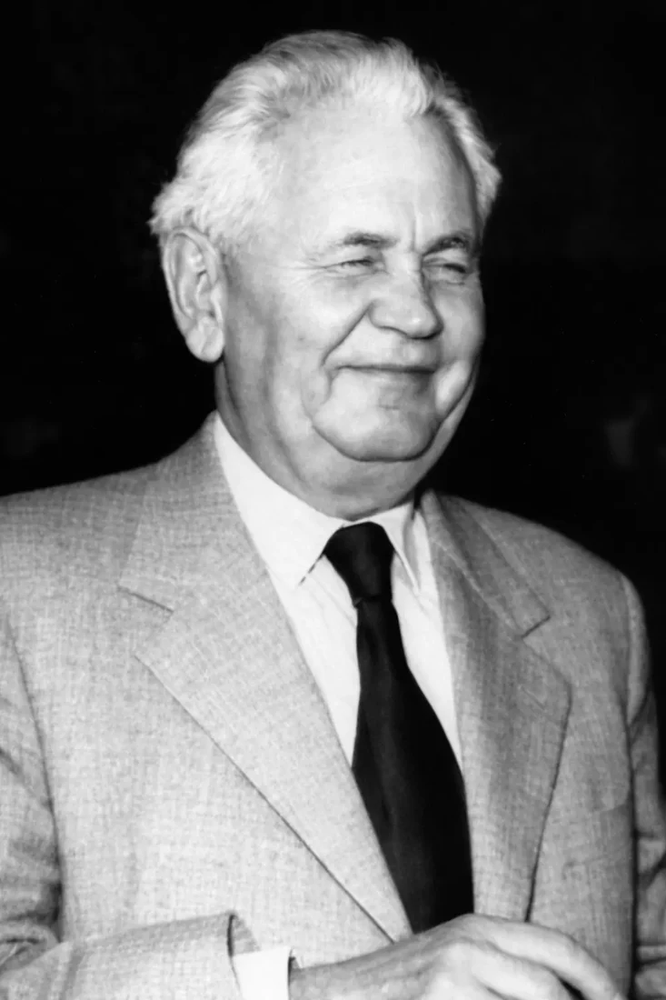

A SZEFO története
Korszerű fejlesztések, mérföldkövek, együttműködések

1953
Vállalat alapítása
A Szegedi Fonalmentő Vállalat megalapítása
Történetünk Szegeden kezdődött 1953-ban. A vállalat létrejötte egy olyan küldetéshez kapcsolódott, amelynek középpontjában az értékteremtő munka, a foglalkoztatás és a társadalmi felelősségvállalás állt.
Az indulás évei szilárd alapot teremtettek a hosszú távú működéshez, amely később a SZEFO egyik legfontosabb örökségévé vált.